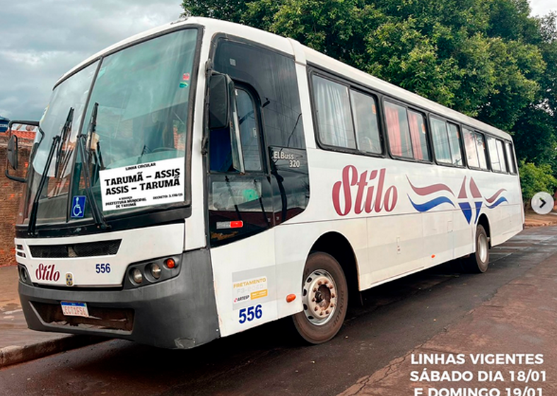

A importância do Transporte Escolar em Tarumã
O transporte escolar é essencial para garantir que todas as crianças e adolescentes de Tarumã tenham acesso à educação de qualidade. Ele permite que alunos das áreas mais afastadas cheguem com segurança às escolas, reduzindo a evasão escolar e promovendo a igualdade de oportunidades.
Com um sistema de transporte eficiente, garantimos que os estudantes possam focar no aprendizado sem preocupações com locomoção. Além disso, o transporte escolar reduz o tráfego urbano e contribui para um ambiente mais sustentável.
A Prefeitura de Tarumã se compromete a oferecer um transporte seguro, confortável e acessível para todos os alunos. Juntos, investimos no futuro da nossa cidade!
